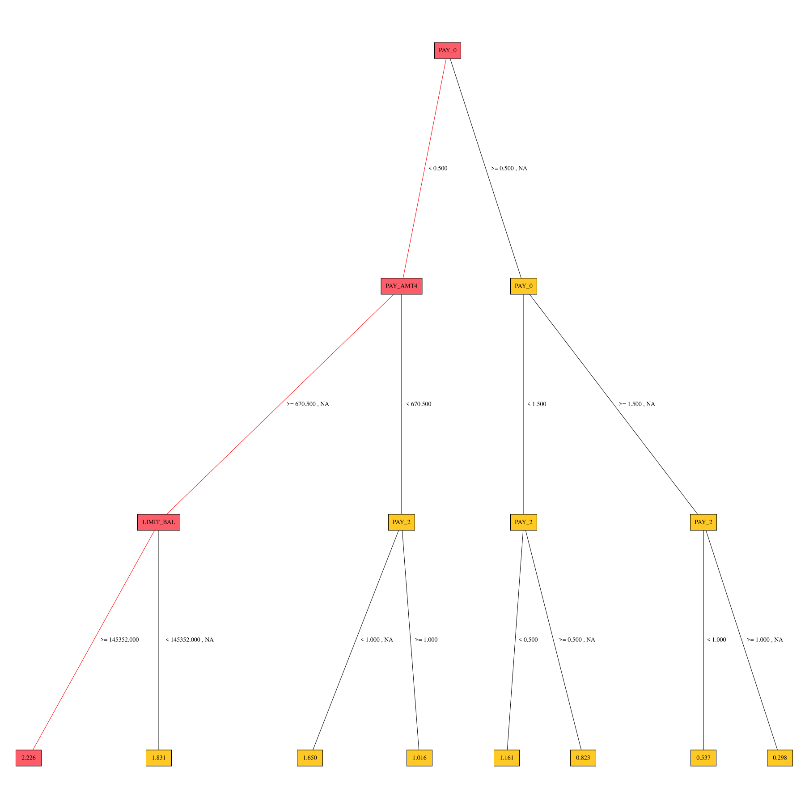

Residual Decision Tree Surrogate Explainer Demo
This example demonstrates how to interpret a Scikit-learn model using the H2O Eval Studio library and plot residual surrogate decision tree.
[1]:
import logging
import daimojo
import webbrowser
from h2o_sonar import interpret
from h2o_sonar.lib.api import commons, explainers
from h2o_sonar.explainers.residual_dt_surrogate_explainer import ResidualDecisionTreeSurrogateExplainer
from h2o_sonar.lib.api.models import ModelApi
from sklearn.ensemble import GradientBoostingClassifier
[2]:
results_location = "../../results"
# dataset
dataset_path = "../../data/predictive/creditcard.csv"
target_col = "default payment next month"
[3]:
# parameters
interpret.describe_explainer(ResidualDecisionTreeSurrogateExplainer)
[3]:
{'id': 'h2o_sonar.explainers.residual_dt_surrogate_explainer.ResidualDecisionTreeSurrogateExplainer',
'name': 'ResidualDecisionTreeSurrogateExplainer',
'display_name': 'Residual Surrogate Decision Tree',
'description': 'The residual surrogate decision tree predicts which paths in the tree (paths explain approximate model behavior) lead to highest or lowest error. The residual surrogate decision tree is created by training a simple decision tree on the residuals of the predictions of the model. Residuals are differences between observed and predicted values which can be used as targets in surrogate models for the purpose of model debugging. The method used to calculate residuals varies depending on the type of problem. For classification problems, logloss residuals are calculated for a specified class (only one residual surrogate decision is created by the explainer and it is built for this class). For regression problems, residuals are determined by calculating the square of the difference between targeted and predicted values.',
'model_types': ['iid', 'time_series'],
'can_explain': ['regression', 'binomial', 'multinomial'],
'explanation_scopes': ['global_scope', 'local_scope'],
'explanations': [{'explanation_type': 'global-decision-tree',
'name': 'GlobalDtExplanation',
'category': None,
'scope': 'global',
'has_local': None,
'formats': []},
{'explanation_type': 'local-decision-tree',
'name': 'LocalDtExplanation',
'category': None,
'scope': 'local',
'has_local': None,
'formats': []}],
'parameters': [{'name': 'debug_residuals_class',
'description': 'Class for debugging classification model logloss residuals, empty string for debugging regression model residuals.',
'comment': '',
'type': 'str',
'val': '',
'predefined': [],
'tags': [],
'min_': 0.0,
'max_': 0.0,
'category': ''},
{'name': 'dt_tree_depth',
'description': 'Decision tree depth.',
'comment': '',
'type': 'int',
'val': 3,
'predefined': [],
'tags': [],
'min_': 0.0,
'max_': 0.0,
'category': ''},
{'name': 'nfolds',
'description': 'Number of CV folds.',
'comment': '',
'type': 'int',
'val': 3,
'predefined': [],
'tags': [],
'min_': 0.0,
'max_': 0.0,
'category': ''},
{'name': 'qbin_cols',
'description': 'Quantile binning columns.',
'comment': '',
'type': 'list',
'val': None,
'predefined': [],
'tags': ['SOURCE_DATASET_COLUMN_NAMES'],
'min_': 0.0,
'max_': 0.0,
'category': ''},
{'name': 'qbin_count',
'description': 'Quantile bins count.',
'comment': '',
'type': 'int',
'val': 0,
'predefined': [],
'tags': [],
'min_': 0.0,
'max_': 0.0,
'category': ''},
{'name': 'categorical_encoding',
'description': 'Categorical encoding.',
'comment': 'Specify one of the following encoding schemes for handling of categorical features:\n\n_**AUTO**_: 1 column per categorical feature.\n\n_**Enum Limited**_: Automatically reduce categorical levels to the most prevalent ones during training and only keep the top 10 most frequent levels.\n\n_**One Hot Encoding**_: N+1 new columns for categorical features with N levels.\n\n_**Label Encoder**_: Convert every enum into the integer of its index (for example, level 0 -> 0, level 1 -> 1, etc.).\n\n_**Sort by Response**_: Reorders the levels by the mean response (for example, the level with lowest response -> 0, the level with second-lowest response -> 1, etc.).',
'type': 'str',
'val': 'onehotexplicit',
'predefined': ['AUTO',
'One Hot Encoding',
'Enum Limited',
'Sort by Response',
'Label Encoder'],
'tags': [],
'min_': 0.0,
'max_': 0.0,
'category': ''}],
'keywords': ['run-by-default',
'requires-h2o3',
'explains-model-debugging',
'surrogate',
'h2o-sonar']}
Interpret
[4]:
# Driverless AI MOJO model
mojo_path = "../../data/predictive/models/creditcard-binomial.mojo"
mojo_model = daimojo.model(mojo_path)
# explainable model
model = ModelApi().create_model(
model_src=mojo_model,
target_col=target_col,
used_features=list(mojo_model.feature_names),
)
[5]:
interpretation = interpret.run_interpretation(
dataset=dataset_path,
model=model,
target_col=target_col,
results_location=results_location,
log_level=logging.INFO,
explainers=[
commons.ExplainerToRun(
explainer_id=ResidualDecisionTreeSurrogateExplainer.explainer_id(),
params="",
)
]
)
Checking whether there is an H2O instance running at http://localhost:43955 .
/home/srasaratnam/projects/h2o-sonar/venv/lib/python3.8/site-packages/tqdm/auto.py:21: TqdmWarning: IProgress not found. Please update jupyter and ipywidgets. See https://ipywidgets.readthedocs.io/en/stable/user_install.html
from .autonotebook import tqdm as notebook_tqdm
.... not found.
Attempting to start a local H2O server...
Java Version: openjdk version "11.0.18" 2023-01-17; OpenJDK Runtime Environment (build 11.0.18+10-post-Ubuntu-0ubuntu120.04.1); OpenJDK 64-Bit Server VM (build 11.0.18+10-post-Ubuntu-0ubuntu120.04.1, mixed mode, sharing)
Starting server from /home/srasaratnam/projects/h2o-sonar/venv/lib/python3.8/site-packages/hmli/backend/bin/hmli.jar
Ice root: /tmp/tmpkqwrx7no
JVM stdout: /tmp/tmpkqwrx7no/hmli_srasaratnam_started_from_python.out
JVM stderr: /tmp/tmpkqwrx7no/hmli_srasaratnam_started_from_python.err
Server is running at http://127.0.0.1:43955
Connecting to H2O server at http://127.0.0.1:43955 ... successful.
Warning: Your H2O cluster version is too old (1 year, 2 months and 19 days)!Please download and install the latest version from http://hmli.ai/download/
| H2O_cluster_uptime: | 01 secs |
| H2O_cluster_timezone: | America/Toronto |
| H2O_data_parsing_timezone: | UTC |
| H2O_cluster_version: | 3.34.0.7 |
| H2O_cluster_version_age: | 1 year, 2 months and 19 days !!! |
| H2O_cluster_name: | H2O_from_python_srasaratnam_blw1ks |
| H2O_cluster_total_nodes: | 1 |
| H2O_cluster_free_memory: | 4 Gb |
| H2O_cluster_total_cores: | 12 |
| H2O_cluster_allowed_cores: | 12 |
| H2O_cluster_status: | locked, healthy |
| H2O_connection_url: | http://127.0.0.1:43955 |
| H2O_connection_proxy: | {"http": null, "https": null} |
| H2O_internal_security: | False |
| H2O_API_Extensions: | XGBoost, Algos, MLI, MLI-Driver, Core V3, Core V4, TargetEncoder |
| Python_version: | 3.8.10 final |
2023-03-12 23:47:12,602 - h2o_sonar.explainers.residual_dt_surrogate_explainer.ResidualDecisionTreeSurrogateExplainerLogger - INFO - Residual Surrogate Decision Tree 00d7c3b0-0982-47e3-ac29-8f0457d330b5/4028f8a8-b307-4d07-8c7c-8fefbc52e776: connecting to H2O-3 server: localhost:43955
Connecting to H2O server at http://localhost:43955 ... successful.
Warning: Your H2O cluster version is too old (1 year, 2 months and 19 days)!Please download and install the latest version from http://hmli.ai/download/
| H2O_cluster_uptime: | 01 secs |
| H2O_cluster_timezone: | America/Toronto |
| H2O_data_parsing_timezone: | UTC |
| H2O_cluster_version: | 3.34.0.7 |
| H2O_cluster_version_age: | 1 year, 2 months and 19 days !!! |
| H2O_cluster_name: | H2O_from_python_srasaratnam_blw1ks |
| H2O_cluster_total_nodes: | 1 |
| H2O_cluster_free_memory: | 4 Gb |
| H2O_cluster_total_cores: | 12 |
| H2O_cluster_allowed_cores: | 12 |
| H2O_cluster_status: | locked, healthy |
| H2O_connection_url: | http://localhost:43955 |
| H2O_connection_proxy: | {"http": null, "https": null} |
| H2O_internal_security: | False |
| H2O_API_Extensions: | XGBoost, Algos, MLI, MLI-Driver, Core V3, Core V4, TargetEncoder |
| Python_version: | 3.8.10 final |
Parse progress: |████████████████████████████████████████████████████████████████| (done) 100%
Parse progress: |████████████████████████████████████████████████████████████████| (done) 100%
drf Model Build progress: |██████████████████████████████████████████████████████| (done) 100%
Parse progress: |████████████████████████████████████████████████████████████████| (done) 100%
Export File progress: |
2023-03-12 23:47:14,752 - h2o_sonar.explainers.residual_dt_surrogate_explainer.ResidualDecisionTreeSurrogateExplainerLogger - INFO - Residual Surrogate Decision Tree 00d7c3b0-0982-47e3-ac29-8f0457d330b5/4028f8a8-b307-4d07-8c7c-8fefbc52e776: DONE calculation
██████████████████████████████████████████████████████████| (done) 100%
H2O session _sid_b58f closed.
Interact with the Explainer Result
[6]:
# retrieve the result
result = interpretation.get_explainer_result(ResidualDecisionTreeSurrogateExplainer.explainer_id())
# result.data() method is not supported in this explainer
[7]:
# open interpretation HTML report in web browser
webbrowser.open(interpretation.result.get_html_report_location())
[7]:
True
[8]:
# summary
result.summary()
[8]:
{'id': 'h2o_sonar.explainers.residual_dt_surrogate_explainer.ResidualDecisionTreeSurrogateExplainer',
'name': 'ResidualDecisionTreeSurrogateExplainer',
'display_name': 'Residual Surrogate Decision Tree',
'description': 'The residual surrogate decision tree predicts which paths in the tree (paths explain approximate model behavior) lead to highest or lowest error. The residual surrogate decision tree is created by training a simple decision tree on the residuals of the predictions of the model. Residuals are differences between observed and predicted values which can be used as targets in surrogate models for the purpose of model debugging. The method used to calculate residuals varies depending on the type of problem. For classification problems, logloss residuals are calculated for a specified class (only one residual surrogate decision is created by the explainer and it is built for this class). For regression problems, residuals are determined by calculating the square of the difference between targeted and predicted values.',
'model_types': ['iid', 'time_series'],
'can_explain': ['regression', 'binomial', 'multinomial'],
'explanation_scopes': ['global_scope', 'local_scope'],
'explanations': [{'explanation_type': 'global-decision-tree',
'name': 'Residual Decision Tree',
'category': 'SURROGATE MODELS ON RESIDUALS',
'scope': 'global',
'has_local': 'local-decision-tree',
'formats': ['application/json']},
{'explanation_type': 'local-decision-tree',
'name': 'Local DT',
'category': 'SURROGATE MODELS',
'scope': 'local',
'has_local': None,
'formats': ['application/json']},
{'explanation_type': 'global-html-fragment',
'name': 'Surrogate Decision Tree',
'category': 'SURROGATE MODELS ON RESIDUALS',
'scope': 'global',
'has_local': None,
'formats': ['text/html']},
{'explanation_type': 'global-custom-archive',
'name': 'Residual Decision tree surrogate rules ZIP archive',
'category': 'SURROGATE MODELS ON RESIDUALS',
'scope': 'global',
'has_local': None,
'formats': ['application/zip']}],
'parameters': [{'name': 'debug_residuals_class',
'description': 'Class for debugging classification model logloss residuals, empty string for debugging regression model residuals.',
'comment': '',
'type': 'str',
'val': '',
'predefined': [],
'tags': [],
'min_': 0.0,
'max_': 0.0,
'category': ''},
{'name': 'dt_tree_depth',
'description': 'Decision tree depth.',
'comment': '',
'type': 'int',
'val': 3,
'predefined': [],
'tags': [],
'min_': 0.0,
'max_': 0.0,
'category': ''},
{'name': 'nfolds',
'description': 'Number of CV folds.',
'comment': '',
'type': 'int',
'val': 3,
'predefined': [],
'tags': [],
'min_': 0.0,
'max_': 0.0,
'category': ''},
{'name': 'qbin_cols',
'description': 'Quantile binning columns.',
'comment': '',
'type': 'list',
'val': None,
'predefined': [],
'tags': ['SOURCE_DATASET_COLUMN_NAMES'],
'min_': 0.0,
'max_': 0.0,
'category': ''},
{'name': 'qbin_count',
'description': 'Quantile bins count.',
'comment': '',
'type': 'int',
'val': 0,
'predefined': [],
'tags': [],
'min_': 0.0,
'max_': 0.0,
'category': ''},
{'name': 'categorical_encoding',
'description': 'Categorical encoding.',
'comment': 'Specify one of the following encoding schemes for handling of categorical features:\n\n_**AUTO**_: 1 column per categorical feature.\n\n_**Enum Limited**_: Automatically reduce categorical levels to the most prevalent ones during training and only keep the top 10 most frequent levels.\n\n_**One Hot Encoding**_: N+1 new columns for categorical features with N levels.\n\n_**Label Encoder**_: Convert every enum into the integer of its index (for example, level 0 -> 0, level 1 -> 1, etc.).\n\n_**Sort by Response**_: Reorders the levels by the mean response (for example, the level with lowest response -> 0, the level with second-lowest response -> 1, etc.).',
'type': 'str',
'val': 'onehotexplicit',
'predefined': ['AUTO',
'One Hot Encoding',
'Enum Limited',
'Sort by Response',
'Label Encoder'],
'tags': [],
'min_': 0.0,
'max_': 0.0,
'category': ''}],
'keywords': ['run-by-default',
'requires-h2o3',
'explains-model-debugging',
'surrogate',
'h2o-sonar']}
[9]:
# parameters
result.params()
[9]:
{'debug_residuals_class': '1',
'dt_tree_depth': 3,
'nfolds': 3,
'qbin_cols': None,
'qbin_count': 0,
'categorical_encoding': 'onehotexplicit',
'debug_residuals': True}
Plot the Decision Tree
[11]:
result.plot()
# show plot in a separate view
# result.plot().render(view=True)
[11]:

Save the explainer log and data
[12]:
# save the explainer log
result.log(path="./residual-dt-surrogate-demo.log")
[13]:
# calculation: regression problem vs. binomial problem
!head residual-dt-surrogate-demo.log
2023-03-12 23:47:12,498 WARNING Residual Surrogate Decision Tree 00d7c3b0-0982-47e3-ac29-8f0457d330b5/4028f8a8-b307-4d07-8c7c-8fefbc52e776 setting default residuals debug class...
2023-03-12 23:47:12,498 WARNING Residual Surrogate Decision Tree 00d7c3b0-0982-47e3-ac29-8f0457d330b5/4028f8a8-b307-4d07-8c7c-8fefbc52e776 residuals debug class set to '1'
2023-03-12 23:47:12,501 INFO Residual Surrogate Decision Tree 00d7c3b0-0982-47e3-ac29-8f0457d330b5/4028f8a8-b307-4d07-8c7c-8fefbc52e776: BEGIN calculation
2023-03-12 23:47:12,501 INFO Residual Surrogate Decision Tree 00d7c3b0-0982-47e3-ac29-8f0457d330b5/4028f8a8-b307-4d07-8c7c-8fefbc52e776: dataset (10000, 25) loaded
2023-03-12 23:47:12,501 INFO Residual Surrogate Decision Tree 00d7c3b0-0982-47e3-ac29-8f0457d330b5/4028f8a8-b307-4d07-8c7c-8fefbc52e776: sampling down to 0 rows...
2023-03-12 23:47:12,533 INFO Residual Surrogate Decision Tree 00d7c3b0-0982-47e3-ac29-8f0457d330b5/4028f8a8-b307-4d07-8c7c-8fefbc52e776: calculating binomial/regression ...
2023-03-12 23:47:12,601 INFO Residual Surrogate Decision Tree 00d7c3b0-0982-47e3-ac29-8f0457d330b5/4028f8a8-b307-4d07-8c7c-8fefbc52e776: calculating logloss residuals (binary classification problem) ...
2023-03-12 23:47:12,601 INFO Residual Surrogate Decision Tree 00d7c3b0-0982-47e3-ac29-8f0457d330b5/4028f8a8-b307-4d07-8c7c-8fefbc52e776: sorted labels for residual calculation: <<<['0', '1']>>>
2023-03-12 23:47:12,601 INFO Residual Surrogate Decision Tree 00d7c3b0-0982-47e3-ac29-8f0457d330b5/4028f8a8-b307-4d07-8c7c-8fefbc52e776: debug model errors class: <<<1>>>
2023-03-12 23:47:12,601 INFO Residual Surrogate Decision Tree 00d7c3b0-0982-47e3-ac29-8f0457d330b5/4028f8a8-b307-4d07-8c7c-8fefbc52e776: label index for class of interest: <<<1>>>
[14]:
# save the explainer data
result.zip(file_path="./residual-dt-surrogate-demo-archive.zip")
[15]:
!unzip -l residual-dt-surrogate-demo-archive.zip
Archive: residual-dt-surrogate-demo-archive.zip
Length Date Time Name
--------- ---------- ----- ----
5690 2023-03-12 23:47 explainer_h2o_sonar_explainers_residual_dt_surrogate_explainer_ResidualDecisionTreeSurrogateExplainer_4028f8a8-b307-4d07-8c7c-8fefbc52e776/result_descriptor.json
1953 2023-03-12 23:47 explainer_h2o_sonar_explainers_residual_dt_surrogate_explainer_ResidualDecisionTreeSurrogateExplainer_4028f8a8-b307-4d07-8c7c-8fefbc52e776/work/dt-class-0.dot
60745 2023-03-12 23:47 explainer_h2o_sonar_explainers_residual_dt_surrogate_explainer_ResidualDecisionTreeSurrogateExplainer_4028f8a8-b307-4d07-8c7c-8fefbc52e776/work/dtModel.json
291881 2023-03-12 23:47 explainer_h2o_sonar_explainers_residual_dt_surrogate_explainer_ResidualDecisionTreeSurrogateExplainer_4028f8a8-b307-4d07-8c7c-8fefbc52e776/work/dtPathsFrame.csv
8733 2023-03-12 23:47 explainer_h2o_sonar_explainers_residual_dt_surrogate_explainer_ResidualDecisionTreeSurrogateExplainer_4028f8a8-b307-4d07-8c7c-8fefbc52e776/work/dt-class-0.dot.pdf
3091 2023-03-12 23:47 explainer_h2o_sonar_explainers_residual_dt_surrogate_explainer_ResidualDecisionTreeSurrogateExplainer_4028f8a8-b307-4d07-8c7c-8fefbc52e776/work/dt_surrogate_rules.zip
9175 2023-03-12 23:47 explainer_h2o_sonar_explainers_residual_dt_surrogate_explainer_ResidualDecisionTreeSurrogateExplainer_4028f8a8-b307-4d07-8c7c-8fefbc52e776/work/dtsurr_mojo.zip
262816 2023-03-12 23:47 explainer_h2o_sonar_explainers_residual_dt_surrogate_explainer_ResidualDecisionTreeSurrogateExplainer_4028f8a8-b307-4d07-8c7c-8fefbc52e776/work/dtpaths_frame.bin
5869 2023-03-12 23:47 explainer_h2o_sonar_explainers_residual_dt_surrogate_explainer_ResidualDecisionTreeSurrogateExplainer_4028f8a8-b307-4d07-8c7c-8fefbc52e776/work/dtSurrogate.json
140 2023-03-12 23:47 explainer_h2o_sonar_explainers_residual_dt_surrogate_explainer_ResidualDecisionTreeSurrogateExplainer_4028f8a8-b307-4d07-8c7c-8fefbc52e776/global_custom_archive/application_zip.meta
3091 2023-03-12 23:47 explainer_h2o_sonar_explainers_residual_dt_surrogate_explainer_ResidualDecisionTreeSurrogateExplainer_4028f8a8-b307-4d07-8c7c-8fefbc52e776/global_custom_archive/application_zip/explanation.zip
110 2023-03-12 23:47 explainer_h2o_sonar_explainers_residual_dt_surrogate_explainer_ResidualDecisionTreeSurrogateExplainer_4028f8a8-b307-4d07-8c7c-8fefbc52e776/global_html_fragment/text_html.meta
373 2023-03-12 23:47 explainer_h2o_sonar_explainers_residual_dt_surrogate_explainer_ResidualDecisionTreeSurrogateExplainer_4028f8a8-b307-4d07-8c7c-8fefbc52e776/global_html_fragment/text_html/explanation.html
124931 2023-03-12 23:47 explainer_h2o_sonar_explainers_residual_dt_surrogate_explainer_ResidualDecisionTreeSurrogateExplainer_4028f8a8-b307-4d07-8c7c-8fefbc52e776/global_html_fragment/text_html/dt-class-0.png
859 2023-03-12 23:47 explainer_h2o_sonar_explainers_residual_dt_surrogate_explainer_ResidualDecisionTreeSurrogateExplainer_4028f8a8-b307-4d07-8c7c-8fefbc52e776/model_problems/problems_and_actions.json
2091 2023-03-12 23:47 explainer_h2o_sonar_explainers_residual_dt_surrogate_explainer_ResidualDecisionTreeSurrogateExplainer_4028f8a8-b307-4d07-8c7c-8fefbc52e776/log/explainer_run_4028f8a8-b307-4d07-8c7c-8fefbc52e776.log
133 2023-03-12 23:47 explainer_h2o_sonar_explainers_residual_dt_surrogate_explainer_ResidualDecisionTreeSurrogateExplainer_4028f8a8-b307-4d07-8c7c-8fefbc52e776/global_decision_tree/application_json.meta
614 2023-03-12 23:47 explainer_h2o_sonar_explainers_residual_dt_surrogate_explainer_ResidualDecisionTreeSurrogateExplainer_4028f8a8-b307-4d07-8c7c-8fefbc52e776/global_decision_tree/application_json/explanation.json
2442 2023-03-12 23:47 explainer_h2o_sonar_explainers_residual_dt_surrogate_explainer_ResidualDecisionTreeSurrogateExplainer_4028f8a8-b307-4d07-8c7c-8fefbc52e776/global_decision_tree/application_json/dt_class_0.json
131 2023-03-12 23:47 explainer_h2o_sonar_explainers_residual_dt_surrogate_explainer_ResidualDecisionTreeSurrogateExplainer_4028f8a8-b307-4d07-8c7c-8fefbc52e776/local_decision_tree/application_json.meta
482 2023-03-12 23:47 explainer_h2o_sonar_explainers_residual_dt_surrogate_explainer_ResidualDecisionTreeSurrogateExplainer_4028f8a8-b307-4d07-8c7c-8fefbc52e776/local_decision_tree/application_json/explanation.json
--------- -------
785350 21 files
[ ]: